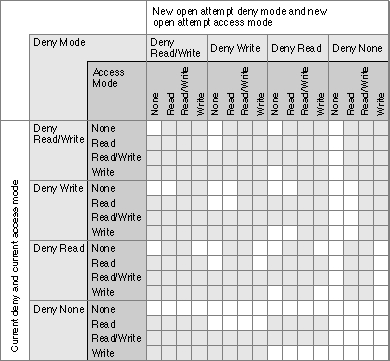
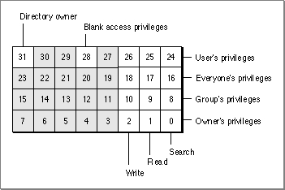

Shared Environments
Any operating environment that supports multiple users and multiple access to data or applications is known as a shared environment. A shared environment can be a number of workstations attached to a network as well as a single workstation executing a multi-user operating system such as A/UX.The File Manager supports access both to locally mounted volumes and to volumes located on devices attached to remote machines on a network. For example, AppleShare, Apple's file-server application, allows users to share data, applications, and disk storage over a network. System software version 7.0 introduced File Sharing, a local version of AppleShare that allows users to make some or all of the files on a volume available over the network. To do so, a user establishes a volume or directory as a share point, making
it available for use by registered users or guests on the network.It is a virtual certainty that some users will run your application in a shared environment. The File Manager, Chooser, and other system software components cooperate to make access to remote volumes largely transparent to your application. As a result, most applications do not need to accommodate shared environments explicitly. You can read and write files, for instance, regardless of whether they are located on a local or a remote volume.
If your application performs certain operations on files, however, you might be able to save considerable time by using special shared environment routines. Suppose, for example, that you want to copy a file to another directory on a volume. In the general case, you handle this by reading a buffer of data from the source file and then writing it to the destination file. If the source and destination volumes are remote, however, this technique might involve the copying of a lot of data over the network. To optimize remote file copying, the File Manager provides the PBHCopyFile function, which copies a remote file without sending the data across the network. Similarly, the
PBHMoveRenamefunction allows you to move and optionally rename a file located on a remote volume.The File Manager provides routines that allow you to control other aspects of a shared environment, including
Table 2-8 lists the File Manager routines that you can use in a shared environment. Note that all of these are low-level routines.
- providing multiple users with shared read/write access to files
- locking and unlocking byte ranges within a file to ensure exclusive access to data during updates
- enabling and disabling sharing on local volumes and directories
- getting and setting access privileges for directories
- determining volume mounting and login information so that any volume can be unmounted and remounted easily
The following sections describe the capabilities provided by these routines.
Shared File Access Permissions
In a shared environment, files can be shared at a file or subfile level. At a file level, a project schedule could be read by many users simultaneously but updated by only one user at a time. At a subfile level, different records of a data base file could be updated by several users at the same time.The access modes provided by the standard file-opening routines prove insufficient for shared files. Two additional open functions,
PBHOpenDenyandPBHOpenRFDeny, allow the ability to deny access as well. These deny modes are cumulative, combining to determine the current access permissions for a file. For instance, if the first opening routine denies reading to others and the second denies writing, both reading and writing are then denied for the file.Figure 2-1 shows how new access and deny modes are granted or refused according to a file's current access and deny modes. An unshaded square indicates that a new open call with the listed permissions would succeed; otherwise, the new open call would fail.
Figure 2-1 Access and deny mode synchronization

You specify deny modes by setting bits in the
ioDenyModesfield of the parameter
block passed toPBHOpenDenyorPBHOpenRFDeny. Currently four bits of this field
are meaningful:
Bit Meaning 0 If set, request read permission 1 If set, request write permission 4 If set, deny other users read permission to this file 5 If set, deny other users write permission to this file The combination of access and deny requests allows four common opening possibilities:
You can open a shared file using either the deny modes described here or the file access permissions described in "File Manipulation" on page 2-7. If you use the original permissions when you open a file located in a shared directory, the File Manager translates those permissions into the corresponding access and deny modes. The basic rule followed in this translation is to allow a single writer or multiple readers, but not both. The translation from the original permissions to the deny-mode permissions is shown in Table 2-9.
- Browsing access. You request browsing access by specifying both read and deny-write modes (
ioDenyModesset to $0021). Browsing access is traditional read-only access; it permits multiple readers but no writers. This access mode is useful for shared files that do not change often, such as help files, configuration files, and dictionaries.- Exclusive access. You request exclusive access by specifying both read and write access and both deny-read and deny-write access (
ioDenyModesset to $0033). Most applications that are not specifically designed to share file data use this permission setting. An exclusive access opening call succeeds only if there are no existing paths to the file. After a successful opening call, all future attempts to establish access paths to the file are denied until the exclusive-access path is closed.- Access as a single writer with multiple readers. You request access as the single writer with multiple readers by specifying both read and write access and deny-write access (
ioDenyModesset to $0023). This access method allows additional users to gain read-only access to browse a document being modified by the initial writer. The writer's application is responsible for range locking the file (by callingPBLockRange) before writing to it, to prevent reading when the file is inconsistent.- Shared access. You request shared access by specifying both read and write access (
ioDenyModesset to $0003). Shared access should be used by applications that support full multi-user access to its documents. Range locking is needed to prevent other users from accessing information undergoing change. Each user must also check for and handle any errors that result from access by other users. You might prefer to use a semaphore to flag records in the document as they are checked out, rather than use range locking exclusively.Notice that
fsCurPermandfsRdWrPermare retried as read-only (browsing access) if exclusive access is not available. In addition, whenever browsing access is requested (that is, when you directly requestfsRdPerm, or when a request forfsCurPermorfsRdWrPermis retried because exclusive access is not available) and cannot be granted, the AppleShare external file system searches through the open file control blocks (FCBs) for another AFP access path to the file. If an AFP access path to that file is found, a read-only access path is returned that shares the AFP access path.Directory Access Privileges
AppleShare allows users to assign directory access privileges to individual directories, controlling who has access to the files and folders in the directory. A directory may
be kept private, shared by a group of registered users, or shared with all users on
the network.Users are organized into groups. Users can belong to more than one group. Information about users and their privileges is maintained by AppleShare. Each directory has access privileges assigned for each of these three classifications of users: owner, group, and everyone. The following privileges can be assigned:
For instance, a user might assign privileges to a particular directory allowing the owner to read, write, and search the directory, and allowing everyone else (whether in the group or not) only to search the directory.
- See Folders. A user with this access privilege (also called search privilege) can see other directories in the specified directory.
- See Files. A user with this access privilege (also called read privilege) can see the icons and open documents or applications in that directory as well.
- Make Changes. A user with this access privilege (also called write privilege) can create, modify, rename, or delete any file or directory contained in the specified directory. Directory deletion requires additional privileges. It is possible to have Make Changes privileges without also having See Folders or See Files privileges; this would allow users to put items into a directory but not view the contents of that directory.
On directories shared using File Sharing, you can also assign blank access privileges. In this case, the File Manager ignores any other access privileges and uses the access privileges of the directory's parent. On the local machine, directories in a shared area have blank access privileges, until set otherwise.
You can use the
- Note
- You cannot assign blank access privileges to a volume's root directory.
PBHGetDirAccessandPBHSetDirAccessfunctions to determine and change the access privileges for a directory. The access privileges are passed in the 4-byteioACAccessfield of theaccessParamvariant of the HFS parameter block passed to these two functions. The 4 bytes are interpreted separately; byte 0 is the high-order byte.
Byte Meaning 0 User's access privileges 1 Everyone's access privileges 2 Group's access privileges 3 Owner's access privileges The bits in each byte encode access privilege information, as illustrated in Figure 2-2. (The high-order byte is on top, and the high-order bit is on the left.) Note that the user's privileges byte also indicates whether the user owns the directory and whether the directory has blank access privileges.
Figure 2-2 Access privileges information in the
ioACAccessfield
If bit 31 is set, then the user is the owner of the specified directory. If bit 28 is set, the specified directory has blank access privileges. If bit 28 is clear, the 3 low-order bits of each byte encode the write, read, and search privileges, respectively. If one of these bits
is set, the directory privileges permit the indicated access to the specified individual.The 3 low-order bits of the byte encoding the user's access privilege information are
the logicalORof the corresponding bits in whichever of the other 3 bytes apply to the user. For example, if the user is the owner of a directory and is in the directory's group, then the 3 low-order bits of the user byte are the logicalORof the corresponding bits in the other 3 bytes. If, however, the user is not the owner and is not in the directory's group, the user privilege bits have the same values as the corresponding ones in the everyone byte.You can use
PBHSetDirAccessto set the low-order 3 bits of all the privileges bytes except the user's privileges byte. In the user's privileges byte, you can set only the blank access privileges bit (bit 28).
- Note
- Not all volumes support blank access privileges. You can call the
PBHGetVolParmsfunction to determine whether a particular volume supports blank access privileges.
Remote Volume Mounting
Typically, the user mounts remote shared volumes through the Chooser or by opening an alias file. The File Manager in system software version 7.0 and later provides a set of calls for collecting the mounting information from a mounted volume and then using that information to mount the volume again later, without going through the Chooser.Ordinarily, before you can mount a volume programmatically, you must record its mounting information while it's mounted. Because the size of the mounting information can vary, you first call the
PBGetVolMountInfoSizefunction, which returns the
size of the record you'll need to allocate to hold the mounting information. You then allocate the record and callPBGetVolMountInfo, passing a pointer to the record.
When you want to mount the volume later, you can pass the record directly to thePBVolumeMountfunction.The programmatic mounting functions can now be used to mount AppleShare volumes. The functions have been designed so that they can eventually be used to mount local Macintosh volumes, such as partitions on devices that support partitioning, and local or remote volumes managed by non-Macintosh file systems.
- Note
- The functions for mounting volumes programmatically are low-level functions designed for specialized applications. Even if your application needs to track and access volumes automatically, it can ordinarily use the Alias Manager, described in the chapter "Alias Manager" in this book. The Alias Manager can record mounting information and later remount most volumes, even those that do not support the programmatic mounting functions.
Privilege Information in Foreign File Systems
Virtually every file system has its own privilege model, that is, conventions for controlling access to stored files and directories. A number of non-Macintosh file systems support access from a Macintosh computer by mapping their native privilege models onto the model defined by the AppleTalk Filing Protocol (AFP). Most applications that manipulate files in foreign file systems can rely on the intervening software to translate AFP privileges into whatever is required by the remote system.The correlation is not always simple, however, and some applications require more control over the files stored on the foreign system. The A/UX privilege model, for example, recognizes four kinds of access: read, write, execute, and search. The AFP model recognizes read, write, deny-read, and deny-write access. If a shell program running on the Macintosh Operating System wants to allow the user to set native A/UX privileges on a remote file, it has to communicate with the A/UX file system using the
A/UX privilege model.System software version 7.0 provides two new functions,
PBGetForeignPrivsandPBSetForeignPrivs, for manipulating privileges in a non-Macintosh file system. These access-control functions were designed for use by shell programs, such as the Finder, that need to use the native privilege model of the foreign file system. Most applications can rely on using shared environment functions, which are recognized by file systems that support the Macintosh privilege model. The new access-control functions do not relieve a foreign file system of the need to map its own privilege model onto the shared environment functions.Like all other low-level File Manager functions, the access-control functions exchange information with your application through parameter blocks. The meanings of some fields vary according to the foreign file system used. These fields are currently defined for A/UX, and you can define them for other file systems.
You can identify the foreign file system through the
PBHGetVolParmsfunction. The attributes buffer introduced in system software version 7.0 for thePBHGetVolParmsfunction contains a field for the foreign privilege model,vMForeignPrivID.A value of 0 for
- Note
- The value of
vMForeignPrivIDdoes not specify whether the remote volume supports the AFP access-control functions. You can determine whether the volume supports the AFP access-control functions by checking thebAccessCntlbit in thevMAttribfield.vMForeignPrivIDsignifies an HFS volume that supports no foreign privilege models. The field currently has one other defined value.CONST fsUnixPriv = 1; {A/UX privilege model}For an updated list of supported models and their constants and fields, contact Macintosh Developer Technical Support.A volume can support no more than one foreign privilege model.
The access-control functions store information in an HFS parameter block of type
foreignPrivParam. The parameter block can store access-control information in one or both ofThe meanings of the fields in the parameter block depend on the definitions established by the foreign file system. For example, the A/UX operating system uses the ioForeignPrivBuffer field to point to a 16-byte buffer that describes the access rights for the specified file or directory. The buffer is divided into four fields, as follows:
- a buffer of any length, whose location and size are stored in the parameter block
- 4 long words of data stored in the parameter block itself